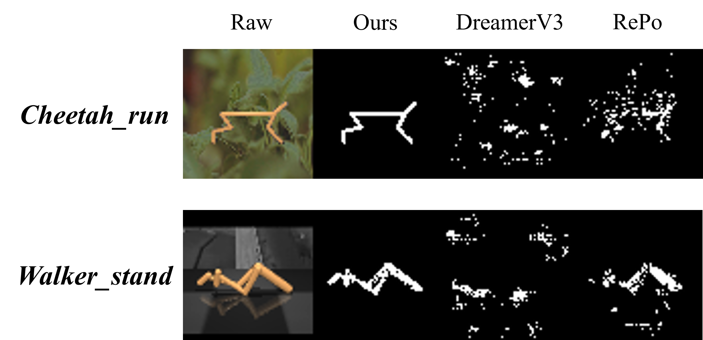

To verify that our model is indeed capable of filtering task-irrelevant redundancy and learning task-specific features, we utilized the Gradient-weighted Class Activation Mapping (Grad-CAM) technique for feature visualization.
DreamerV3 baseline does not capture any meaningful information that relevant to the task, and RePo struggle to precisely identify the control-relevant parts of the image inputs as it also focus on some irrelevant background noises like the reflections on the surface. Instead, our model filter out background noise and focuses on the objects that is crucial for control tasks effectively.
1. We have thoroughly revised our manuscript, addressing all the mentioned typos and minor issues.
2. We provided various new experimental results and visualizations as suggested by the reviewers.
3. We have provided more comprehensive empirical evaluations and the corresponding descriptions in the current revision.
4. To clarify our theoretical contributions, we have expanded the explanation of Theorem 5.1 to ensure a more comprehensive/clearer understanding.
5. We have now provided the background description of bisimulation relation and bisimulation metrics in Appendix B.2 to make our manuscript more self-contained.
1. We have included additional Distraction and Exogenous Noise based benchmarks, including DeepMind Control Suite Generalization Benchmark (DMC-GS) and Distracting Control Suite (Distraction-CS), which makes the total number of distractions to 9 (including the default setting).
2. We have included a visualization of the learned features using the Gradient-weighted Class Activation Mapping (Grad-CAM) to demonstrate the model's capability to learn task-specific information.
3. We have provided the result with IQM metric for DMC tasks with distraction settings to show that our model is statistically significantly better than the baselines. We also updated all results with 6 seeds for better statistical significance.
4. We have included additional ablation studies of masking ratio and cuboid patch size.
5. We have also provided analysis of failure cases and bottlenecks of HRSSM.